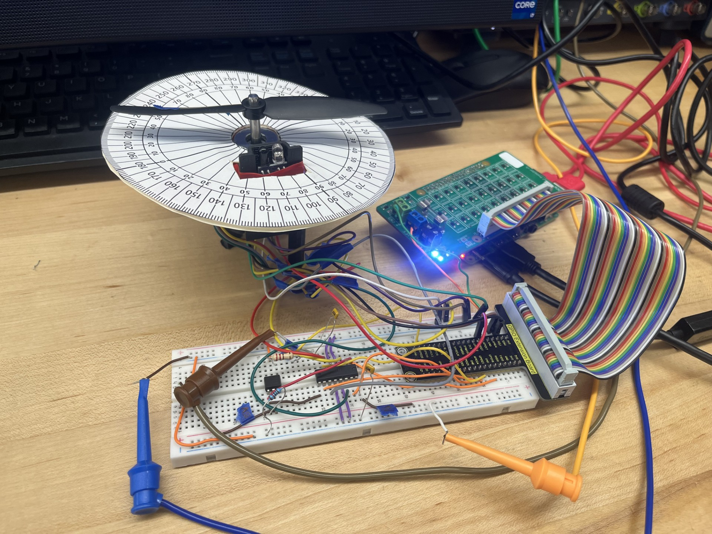

Project Overview
PARMCO is a phone-controlled, closed-loop stepper motor system. A custom iOS app talks over Bluetooth Low Energy to a Raspberry Pi 4 (RP4). The RP4 drives a NEMA 17 stepper motor through an SN754410NE H-bridge, reads an AS5600 magnetic encoder and an IR sensor, and reports speed and angle back to the app. A two-blade propeller on the motor shaft, read against a printed protractor, is the visual indicator of speed and angle.
The system solves two control problems with one motor and one encoder:
- Speed control: Manual mode (open loop) and Maintain mode (closed loop).
- Position control: calibrate zero, set to zero (return to home), angle targets and an encoder-based feedback hold.
PARMCO runs standalone. The RP4 starts the PARMCO program automatically at boot through a systemd service, keeps the motor disabled, and waits for the phone to connect. It needs only power: no keyboard, monitor, internet or AI.
Step mode
Half-step: 0.9° per step, 400 steps per revolution, for finer angle resolution.
Speed range
10–100 RPM in normal use. An over-range unlock allows higher speeds for open-loop testing only.
Languages
ARM32 assembly (motor interface), C on Linux (control, Bluetooth, sensors, logging), Swift/SwiftUI (iOS app).

How the System Works
System Architecture
The phone sends commands, the RP4 closes the control loop, and the sensors report back.
Hardware Design
| Component | Role in PARMCO |
|---|---|
| Raspberry Pi 4 | Runs the motor, sensor, control, Bluetooth and logging code. Boots quiet and reports RPM and angle to the app. |
| NEMA 17 stepper (XY42STH34-0354A) | Actuator: 1.8° per full step (0.9° in half-step mode), rated 12 V and 0.35 A per phase. The propeller mounts on its shaft. |
| SN754410NE quad half-H driver | Wired as two H-bridges, one per motor coil. VCC1 (pin 16, 5 V logic) and VCC2 (pin 8, 12 V motor) come from the bench DC supply, never from the RP4. |
| 4N25 optocoupler | Isolated on/off enable for the H-bridge, driven from GPIO 26. Wired so the motor is disabled whenever the GPIO is low or floating, so the hardware guarantees a quiet start-up. |
| AS5600 magnetic encoder | Measures the absolute shaft angle over I2C (SDA on GPIO 2, SCL on GPIO 3). Mounted on the class 3D-printed motor stand. |
| IR sensor | Measures propeller RPM. Reflective tape on the underside of both blades gives a reliable pulse for each blade, so two pulses per revolution. |
| Propeller + printed protractor | Visual and independent reference. One blade is marked as the main reference blade. |
📄 References: Detailed Schematic · Circuit Analysis: How It Works · Parts List
Software Design
The software is split into three layers so that time-critical motor control stays fast and predictable.
| Layer | Files | Responsibilities |
|---|---|---|
| Motor interface (ARM32 assembly) | motorDriver.s | Step routine: looks up the next half-step coil pattern in a table and drives the four H-bridge inputs. Enable routine: turns the H-bridge on and off through the 4N25. Step-timing loop: uses the ARM generic timer to wait until each step is due. These routines are called from C using the AAPCS convention, and all GPIO access goes through the class E4235 library. |
| Motor control and sensors (C) | motor_cp3.c, motor_cp3.h | Continuous rotation at the commanded step rate, IR pulse timing and RPM, AS5600 angle reads and encoder-derived RPM, calibration and position moves, and CSV logging. |
| Bluetooth server (C) | parmco_ble_cp3.c | A BLE GATT server built on BlueZ with GLib/GIO. It advertises as PARMCO, receives commands from the phone, acknowledges each one (for example ACK:START), and streams live status back to the app. |
| iOS app (Swift) | PARMCOApp.swift, ContentView.swift, BluetoothManager.swift | The SwiftUI interface and a CoreBluetooth manager that scans for the PARMCO service, connects, sends commands, receives notifications and shows connection state. |
| Start-up service | parmco.service (systemd) | Launches the PARMCO program after Bluetooth is available at boot and restarts it automatically if it stops, so the RP4 runs with no keyboard or terminal. |
📄 References: Software Documentation (latest) · CP2 Software Documentation
Start-up and Bluetooth Behavior
- At power-up the systemd service starts the PARMCO program. The motor stays disabled, and the shaft turns freely by hand.
- The phone connects from inside the app with the Connect to Raspberry Pi button, and the app shows when it is connected to PARMCO-RP4.
- Every command the phone sends is shown on the RP4 and acknowledged back to the phone, so both sides confirm the link is working.
- After connecting, the app shows the defaults: Manual mode, clockwise, 20 RPM, motor stopped, not calibrated.
App Controls and Control Modes
Phone App Controls
The app is organized into panels: Bluetooth Connection, Control Mode, Desired Speed, Direction, Motor State, Bluetooth Messages, Live Motor and Sensor Status, Position Controls, and Logging and Test Controls.
| Control | What it does |
|---|---|
| Start / Stop | Start runs the motor until Stop is pressed. Stop disables the H-bridge through the 4N25 and turns off all feedback, including the hold, so the propeller turns freely by hand. |
| Direction | Clockwise or counterclockwise. The motor is stopped before changing direction. |
| Faster / Slower | Changes speed in small steps while the motor runs. |
| Desired RPM + Set RPM | Accepts 10–100 RPM. Invalid values are rejected with a visible warning, and the motor keeps its current setting. |
| Mode selector | Switches between Manual and Maintain. |
| Calibrate Zero | With the reference blade aligned to 0° on the protractor, stores the current encoder reading as the zero offset. |
| Set to Zero | Returns the reference blade to 0° using encoder feedback. Refused until the system is calibrated. |
| Move to Angle | Moves the blade to an entered angle, at the speed set by desired RPM. |
| Start / Stop CSV Logging | Starts and stops a CSV log on the RP4. The app shows the logging state, file name and elapsed time. A Mark Event button adds markers to the log. |
| Over-Range Unlock (Tests B/G) | Allows speeds above 100 RPM, up to 400 RPM, for open-loop tests only. Turns itself off when the motor stops. |
| Live status panel | Shows the actual IR RPM, encoder RPM, encoder angle and calibration status, plus the last command sent and the RP4's response. |
Speed Control Final checkpoint
Manual Mode (open loop)
The user sets the speed with desired RPM and the faster and slower buttons. The RP4 converts RPM into a step rate (RPM × 400 steps ÷ 60 s) and steps at that rate without checking the result. If the propeller is pushed or slowed, nothing corrects it.
Maintain Mode (closed loop)
The RP4 keeps comparing the desired RPM with the measured RPM and adjusts the step rate to remove the difference. If the propeller is slowed by a disturbance, Maintain brings it back to the desired speed once the disturbance is released.
Position Control Final checkpoint
- Calibrate zero: ties encoder zero to protractor zero. This is required after every power-up. Until then, the app shows "Not calibrated" and refuses position commands.
- Set to zero: drives the blade until the offset-corrected encoder angle reads 0°, handling the wrap between 359° and 0°.
- Angle target: moves to any entered angle from either direction and lands on the nearest half-step (0.9°).
Because these moves use the encoder rather than the step count, set to zero still returns the blade to 0° after the motor has lost steps.
Feedback Hold Final checkpoint
After a set to zero or angle target move, PARMCO holds position with the encoder instead of coil current:
- The RP4 disables the H-bridge, so no coil current flows. The motor's detent torque (about 120 g·cm) holds the unloaded propeller.
- The encoder keeps watching the shaft. If the error leaves a ±1° band around the target, the RP4 re-enables the H-bridge, corrects back to the target and disables again. Inside the band it does nothing, so sensor noise cannot cause chatter.
- Before re-enabling, the RP4 picks the coil pattern that matches the encoder's current angle. Coil patterns repeat every 7.2°, so re-applying the old pattern after a large nudge would snap the rotor a full 7.2° off target.
- Pressing Stop cancels the hold, and the shaft then turns freely.
Data Logging
Logging runs alongside any mode without slowing the control loop. Files are saved in a logs folder on the RP4. Each row is time-stamped from the Linux monotonic clock and records the mode, commanded RPM and angle, step count and step angle, encoder angle (wrapped and cumulative), IR, encoder and app RPM, enable state, and event markers. These logs are the source for all test results below.
Development Timeline
Checkpoint 1: Motor turns
AI-generated schematic, parts list and assembly instructions. ARM32 motor driver and C keyboard program for enable, direction, one revolution, run/stop and speed. Moved to half-step mode for smoother revolutions. The 4N25 enable was moved from GPIO 4 to GPIO 26 for easier wiring.
Checkpoint 2: Bluetooth + IR
Set up Xcode and iPhone developer mode, built the first SwiftUI app and CoreBluetooth manager, and wrote the RP4 BLE GATT server with two-way acknowledgments. Added IR RPM sensing and passed Test A from the keyboard.
Checkpoint 3: Full app control
Moved every control to the app, added the AS5600 encoder, calibrate zero, set to zero, angle targets, live status, logging and the over-range unlock. Set up launch on startup. Fixed an encoder register-read issue and a slipping propeller. Passed Tests A and B.
Final: Closed-loop control
Adds Maintain mode, closed-loop position correction and the feedback hold. Confirms Bluetooth re-pairing and app reinstall, and runs Tests A–G.
Validation and Results
Each function is checked against an independent reference (blade counts, slow-motion video or the printed protractor) instead of trusting the encoder alone.
Test Plan
| Test | What it shows | Independent check |
|---|---|---|
| A. RPM sensing and sweep | IR, encoder-derived and app RPM agree with the commanded speed from 10–100 RPM | Blade count or slow-motion video |
| B. Open-loop missed steps | Without feedback, the motor loses steps and the step count no longer matches the shaft | Protractor and encoder angle |
| C. Static angle accuracy | Angle targets land within one step from both directions | Printed protractor |
| D. Step response | How quickly and cleanly the blade moves from 0° to 90° at different speeds | Protractor and slow-motion video |
| E. Disturbance rejection | Maintain returns to the desired RPM after a push, and recovers better than Manual | Blade count or video; encoder RPM |
| F. Feedback hold | Coils stay off at rest, and the ±1° band is restored after nudges | Protractor; DC supply current |
| G. Forced desync and return to zero | After lost steps, set to zero returns the reference blade to 0° | Printed protractor |
Test A Results: RPM Sensing Through the App
Ten speeds from 10 to 100 RPM, one log per speed. The independent RPM is a 30-second blade count.
| Commanded RPM | Avg IR RPM | IR error | Avg encoder RPM | Encoder error | Independent RPM | Independent error |
|---|---|---|---|---|---|---|
| 10.05 | 9.859 | 1.90% | 10.037 | 0.13% | 10 | -0.50% |
| 20.00 | 19.898 | 0.51% | 19.907 | 0.47% | 21 | +5.00% |
| 30.00 | 29.890 | 0.37% | 29.904 | 0.32% | 31 | +3.33% |
| 39.90 | 39.701 | 0.50% | 39.695 | 0.51% | 41 | +2.76% |
| 50.40 | 50.105 | 0.59% | 50.105 | 0.58% | 52 | +3.17% |
| 60.90 | 60.437 | 0.76% | 60.435 | 0.76% | 62 | +1.81% |
| 70.35 | 69.780 | 0.81% | 69.774 | 0.82% | 73 | +3.77% |
| 80.85 | 80.047 | 0.99% | 80.045 | 1.00% | 82 | +1.42% |
| 88.50 | 87.509 | 1.12% | 87.495 | 1.14% | 92 | +3.95% |
| 98.55 | 97.456 | 1.11% | 97.452 | 1.11% | 101 | +2.49% |
The IR and encoder readings stayed within about 2% of the commanded speed at every point, and the app showed the same value as the IR sensor. The encoder was the most accurate source at low speed. The larger independent errors come mostly from the limits of counting blade passes by eye.
Test B Results: Open-Loop Missed Steps
Manual mode with the over-range unlock on, ramping up until the motor lost sync. Half-step mode (0.9° per step).
| Trial | Steps missed at | Sync lost after | Total divergence | Encoder vs. protractor | Within 2°? |
|---|---|---|---|---|---|
| 1 | 271.65 RPM | 12.74 s | 9,059.0° (≈25.2 rev) | 225.09° vs. 225° (+0.09°) | Pass |
| 2 | 285.15 RPM | 12.00 s | 9,429.3° (≈26.2 rev) | 309.64° vs. 310° (−0.36°) | Pass |
| 3 | 271.65 RPM | 10.99 s | 8,456.7° (≈23.5 rev) | 159.70° vs. 160° (−0.30°) | Pass |
Once the motor stalled, the step count kept climbing while the shaft barely moved, so the step count was off by more than 23 revolutions. The encoder still matched the protractor within 0.4°. This is why PARMCO uses the encoder, not the step count, for position control.
Tests C–G Final checkpoint
[Add results, graphs and log file names here as tests are completed.]
📄 Full reports: Checkpoint 2 Report · Checkpoint 3 Report
Hardware Documentation
Detailed Schematic
Full wiring of the Pi, H-bridge, 4N25 enable, motor, IR sensor and encoder.
Open PDFPreview
Circuit Analysis: How It Works (CP2)
Explanation of the H-bridge, optocoupler enable and IR sensor circuits.
Open PDFPreview
Software Documentation
CP3 Software Documentation
Software design, libraries and code flags for app control, AS5600 encoder support, RPM reporting and logging.
Open PDFPreview
CP2 Software Documentation
Software design, library attribution and structure for Checkpoint 2.
Open PDFPreview
iOS Control App
A SwiftUI app built in Xcode that connects to PARMCO over Bluetooth with CoreBluetooth.
AI Interaction & Reflection
Documentation of how AI was used at each checkpoint, including what it did well and what needed human correction.
Checkpoint 2: AI Interaction
Prompts, results and confirmation for the motor driver, iOS setup, Bluetooth link, IR sensor and documentation.
Open PDFPreview
Checkpoint 3: AI Interaction
Prompts, results and confirmation for app control, encoder support, launch on startup, Tests A and B, and this site.
Open PDFPreview
Pros and Cons of Working with AI
[HUMAN EDIT] Reflection written by Macey Glad.
While this project was completed using primarily AI, with minimal human tweaks, there was a lot of human intervention coming through the prompt writing and fact checking of the project. Group members completed a lot of background research on topics such as Swift, that they were unfamiliar with, to best understand how to begin interacting with the AI prompts.
For hardware documentation and schematic generation, the process involved many sanity checks with the multimeter and human eye. A faulty connection could cause the destruction of a component or the Raspberry Pi itself, so it was important that the hardware was thoroughly checked over before implementation.
We as a group learned quickly that including specific guidelines for the LLM, including specific and strict details in the prompting process was essential to the completion of a good AI generated product. Picking and providing the knowledge such as datasheets, pinouts, and rating sheets and attaching it to the relevant prompts became impactful to the results as well. We as a team did a lot of the searching of the specific relevant information needed for the project beforehand, which made it easier to get a better generated product. Limiting the LLM sources, or directly indicating which sources we felt were most valid helped create results that were accurate the first time and didn't need reprompting.
Pros: AI resources were great at creating time consuming graphs and visuals, the base code generation for extremely limited application requirements generally came out well, reduced reporting time due to the elimination of graph making by hand, provided helpful directions for processes that we were unfamiliar with beforehand (using Swift and Apple Developer Tools, GitHub Pages, ect.)
Cons: Since the LLMs have such large knowledge bases sometimes the prompts would generate answers that were not most helpful to our application, making small edits to schematics (such as switching a single GPIO) would take a long time and often introduce confusing drawings, the quality of generated answers is highly dependent on the quality of the prompting so if you have little background knowledge it can be hard to know what to prompt, the quality of some of the results were below our personal standard but because of the minimal tweak limitation it slowed our documentation process down often due to continuous re-prompting small details
Overall, the group felt that the project was informative in which tools were better at certain processes and how to go about quality checking AI's outputs systematically.
[END HUMAN EDIT]